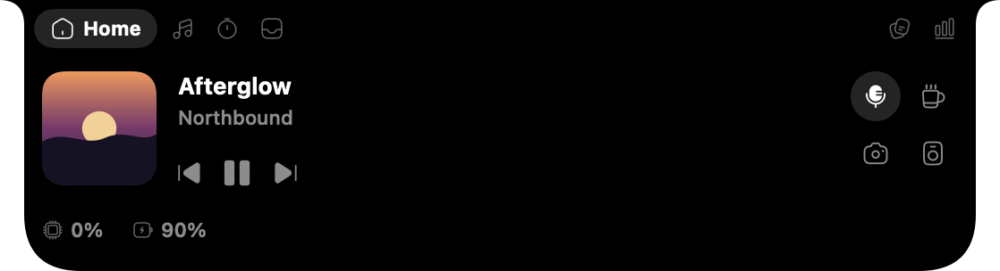
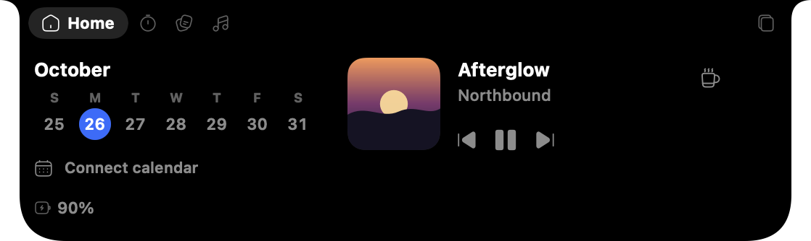
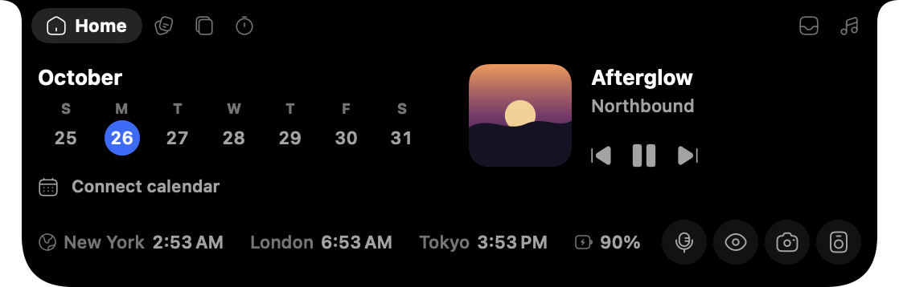
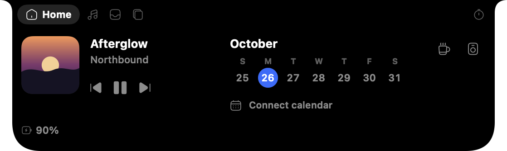
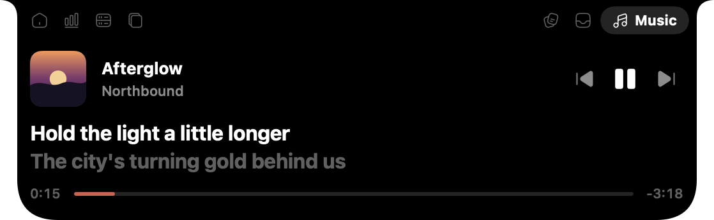
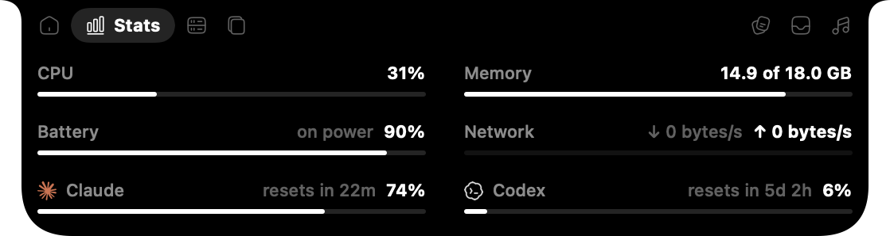
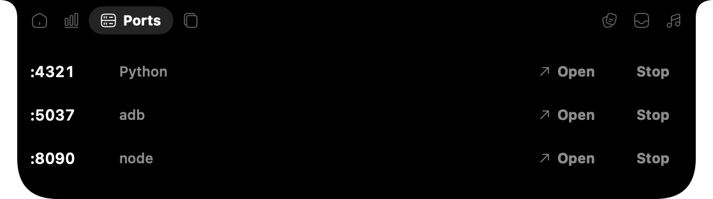
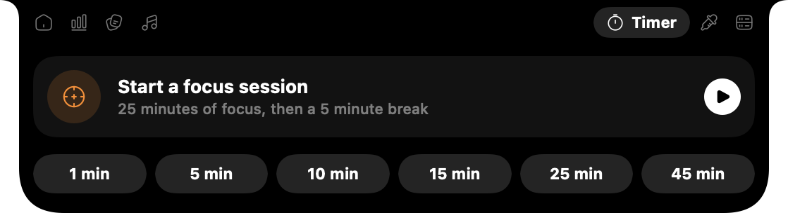

Built around what you do.
Tell it what you do the first time it opens. Ledge switches on the tools that fit and puts the ones you'll use most closest to the notch. Mix as many as you like.





Claude and Codex usage, alerts when an agent finishes, your dev servers' ports, and the clipboard close by.
Quiet, until
something needs you.
Closed, Ledge is just the notch. When something happens, it says so right beside it, then gets out of the way.
An agent needs youClaude Code or Codex is waiting on your answer.
A meeting's about to startTwo minutes' warning, once per meeting.
Your mic is mutedIt stays there, so you never talk into the void.
Volume and brightnessA slim level instead of the big square in the middle of the screen.
Plugged in, or running lowAnd your AirPods' battery when they connect.
A color, copiedPick any pixel on screen with ⌃⌥P.
Open it, and
it's all there.
Hover the notch and each tool is a tab away, with the ones you use most nearest the middle.

Lyrics that keep time.
Whatever's playing, in any app, with synced lyrics that scroll a line at a time and the app's own icon on the artwork.

Your Mac, and your limits.
CPU, memory, battery and network, next to how much of your Claude and Codex plans you've used and when they reset.

Every dev server, one click away.
What's listening on localhost, with Open in the browser and a Stop that asks twice.

Focus in good-sized pieces.
Twenty-five minutes of focus rolls straight into a five minute break, and the countdown ticks beside the notch.
Made for building with AI.
Connect Claude Code and Codex, and the notch tells you when a long task finishes or needs your say, so you can look away while they work.
Ledge asks before it changes anything, keeps a backup, and leaves your existing settings working.
And everywhere else.
The small things you'd otherwise install five apps for.
It stays on
your Mac.
No accounts, no analytics, no tracking.
- Your clipboard is kept in memory only, and anything a password manager marks as secret is skipped.
- Notes, files and colors stay in your Mac's own folders. Calendar events are read through macOS and never leave it.
- Two things go online: lyrics are looked up by song and artist, and the Claude meter asks Anthropic for your usage with the login Claude Code already saved.
- The full privacy policy
Yours to keep, and to read.
- No account
- No trial, no ads
- MIT licensed on GitHub
Questions, answered.
Will it slow my Mac down?
No. It's a native Mac app that sits idle until something changes. The few things it checks on a timer, like the clipboard and your microphone, are tiny and only run while those tools are on.
My Mac doesn't have a notch.
Ledge works on any Mac running macOS 14 or later, and on external displays. Without a notch it sits at the top of the screen as a small pill.
Is it really free?
Yes. No trial, no account and no ads. The code is on GitHub under the MIT license, so you can read it, build it yourself, or help make it better.
Why does it ask for Accessibility?
Only for two tools: showing volume and brightness in the notch, and snapping windows. Everything else works without it, and setup only asks for what your tools need.
What does connecting Claude Code or Codex change?
It adds a small command to their settings that tells Ledge when a task finishes or needs you. Ledge asks first, saves a backup of each file, keeps any notification command you already had working, and removes everything when you disconnect.
Can I change what it shows later?
Any time. Change what you do in Settings, switch individual tools on or off, or run setup again from the menu bar.